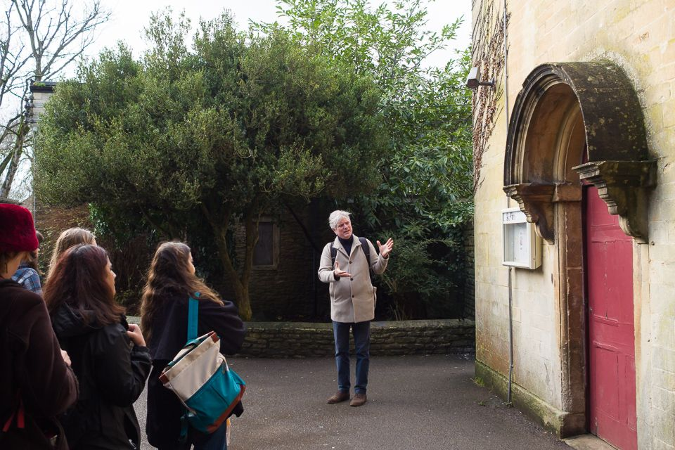
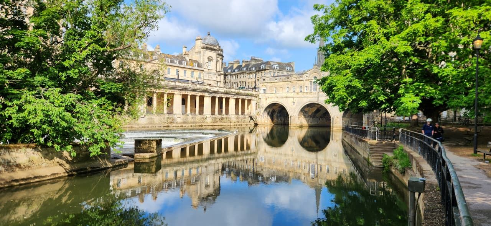

News
Field visit to Corsham
Students on the MSc in Conservation of Historic Buildings have started their conservation project.
Read MoreUniversity of Bath
Department of Architecture & Civil Engineering
Preserving the past, regenerating the future.
Learn More
Students on the MSc in Conservation of Historic Buildings have started their conservation project.
Read More
The call to apply for the MSc in Conservation of Historic Buildings is now open!
Apply!
Join us for the Inaugural Conference on Regenerative Futures (RENEW 2026) in Bath, UK.
Learn More